Driving with Gamepad
Now that motor objects are setup and you know the basics of moving motors, it is time to begin driving the robot.
Motor Positions and Directions
Before starting to drive the robot, it is important to know which motor object in code cooresponds to which physical motor. For example, on a two wheel drive robot, you need to know if motor A is left or right (and the same for motor B). For a four wheel drive robot, you needs to know which motor is front left, front right, rear left, and rear right. This is easily determined by examining the wiring on your robot (follow the wires from a specific motor to the motor controller to determine which motor it is). Once you've done this, it is a good idea to change the name of your motor variables to be something more relevant. For example on a two wheel drive robot instead of motor_a and motor_b you could use lmotor and rmotor (left and right motor). On a four wheel drive robot you could use flmotor, frmotor, rlmotor, and rrmotor (front left, front right, rear left, rear right). You can rename the motor objects using something like what is shown below
# Somewhere in __init__
self.motor1 = ...
self.motor2 = ...
self.motor3 = ...
self.motor4 = ...
# Change to something like the following
# Make sure to use the correct numbers for each motor
self.flmotor = ...
self.frmotor = ...
self.rlmotor = ...
self.rrmotor = ...
// At the bottom of the Robot class declaration
MotorType motor1 = ...;
MotorType motor2 = ...;
MotorType motor3 = ...;
MotorType motor4 = ...;
// Change to something like the following
// Make sure to use the correct numbers for each motor
// This may also be in the initializer list of a constructor
// depending on which motor controller you use
MotorType flmotor = ...;
MotorType frmotor = ...;
MotorType rlmotor = ...;
MotorType rrmotor = ...;
To check if you have each motor correct add a line like the following to robot_enabled / robotEnabled for the front left motor (or just the left motor on a two-wheel drive robot). Build (if required) and deploy the robot code. When enabled, the front left (or left) wheel should spin. Repeat this for all motors and make changes as needed.
def robot_enabled(self):
self.flmotor.set_speed(1)
void robotEnabled(){
flmotor.setSpeed(1);
}
Now that it is easy to identify which motor is which from your code, it should be easy to make sure all motors spin the "correct" direction. In this case "correct" means that all motors spin the same direction when given a positive value. Often it is best to choose positive to be forward, therefore for this section "correct" will mean that a motor spins such that the robot would move forward when given a positive speed.
To determine which motors need to be inverted, replace robot_enabled / robotEnabled with the following. If you have a two wheel drive robot, change the motor names and only keep two lines.
def robot_enabled(self):
self.flmotor.set_speed(1)
self.frmotor.set_speed(1)
self.rlmotor.set_speed(1)
self.rrmotor.set_speed(1)
void robotEnabled(){
flmotor.setSpeed(1);
frmotor.setSpeed(1);
rlmotor.setSpeed(1);
rrmotor.setSpeed(1);
}
Build and deploy the program to the robot. When enabled all motors should begin spinning. If any are spinning the incorrect direction (incorrect meaning they would make the robot move in reverse) add a line like the following in robot_started / robotStarted to invert its direction.
# If front left motor is incorrect add the following
# Change motor name as needed
# Add for multiple motors if needed
self.flmotor.set_inverted(True)
// If front left motor is incorrect add the following
// Change motor name as needed
// Add for multiple motors if needed
flmotor.setInverted(true);
After adding these lines, rebuild and deploy. Enable the robot again and all motors should move the robot forward.
Drive Helpers
Now that you know which motor is which and all spin the correct direction, the problem becomes how to choose a speed for the motors. The plan is to use a gamepad to drive the robot, but what specifically should control the motor movement? One method would be to drive the robot at a fixed speed when a button is held, but that is relatively limited. Another option would be to use a joystick to control a specific motor, or a set of motors, however this may require multiple lines of code to do the same thing to multiple motors or it may require calculations to determine a motor's speed. Two common control schemes are described below
Tank Drive is a method where you use the vertical axes on a controller to control the robot. The left stick is moved up / down to control the speed of the left motors. The right stick is moved up / down to control the speed of the right motors. This method requires no special calculations as the motor's speeds come directly from axis values, but you may have to set the same speed to many motors at a time, making it easy to miss one and have an issue in your code. Additionally, this method of control is not very "easy" to use.
Arcade Drive is a method where a vertical axis controls the robot's speed and a horizontal axis controls the robot's rotation. These could be two axes on the same stick or on different sticks. Often, the left stick would be moved up / down to control the robot's forward speed and the right stick would be moved left / right to rotate the robot. This is a more intuitive method of controlling the robot, however it requires that some calculations be performed using the joystick values to determine how fast each motor should spin.
As explained above, using joystick axes to control the robot is sometimes difficult, however the ArPiRobot core library (corelib) provides "drive helpers" to enable these control schemes to work easily. The following code will focus on the Arcade drive scheme as it is easier to use and often preferred. The corelib provides a ArcadeDriveHelper object which manages motor speeds. The drive helper is given a "speed" and "rotation". It calculates how fast each motor should be moving based off this and controls the motor speeds. To use ArcadeDriveHelper add the following to the top of robot.py or robot.hpp with the other imports / includes.
from arpirobot.core.drive import ArcadeDriveHelper
#include <arpirobot/core/drive/ArcadeDriveHelper.hpp>
Then add the following at the indicated location
# Add in __init__ with other devices (after motors)
self.drive_helper = ArcadeDriveHelper(
[self.flmotor, self.rlmotor], # Left motors
[self.frmotor, self.rrmotor] # Right motors
)
# For a 2-wheel robot use this instead
self.drive_helper = ArcadeDriveHelper(
self.lmotor, # Left motor
self.rmotor # Right motor
)
// Add with device declarations (after motors)
ArcadeDriveHelper driveHelper {
{flmotor, rlmotor}, // Left motors
{frmotor, rrmotor} // Right motors
};
// For a 2-wheel robot use this instead
ArcadeDriveHelper driveHelper {
lmotor, // Left motor
rmotor // Right motor
};
Finally, replace robot_enabled / robotEnabled with the following to test the drive helper
def robot_enabled(self):
speed = 1.0
rotation = 0.25
self.drive_helper.update(speed, rotation)
void robotEnabled(){
double speed = 1.0;
double rotation = 0.25;
driveHelper.update(speed, rotation);
}
When the robot is enabled (build and deploy the code first) the robot will drive forward with a slight ark due to the rotation. This update function will be used later with gamepad data to drive the robot. In addition, if you ever want to change the speed value without affecting rotation you can use update_speed / updateSpeed. Likewise the rotation can be changed without affecting the speed using update_rotation / updateRotation.
The TankDriveHelper is also included in the corelib and provides support for the tank drive scheme described above. It works similarly to ArcadeDriveHelp, but instead of speed and rotation you provide a left speed and right speed to update(left_speed, right_speed). This drive helper will not be used in this guide as the arcade drive scheme is more intuitive.
Using a Gamepad
Now that your code contains a drive helper, all that remains to drive the robot is to get gamepad data from your computer to the robot. The Drive Station is used to accomplish this.
Gamepads in the Drive Station
Before modifying the robot code, open the Drive Station on your computer and connect your gamepad. You should see it listed in the bottom left of the drive station.
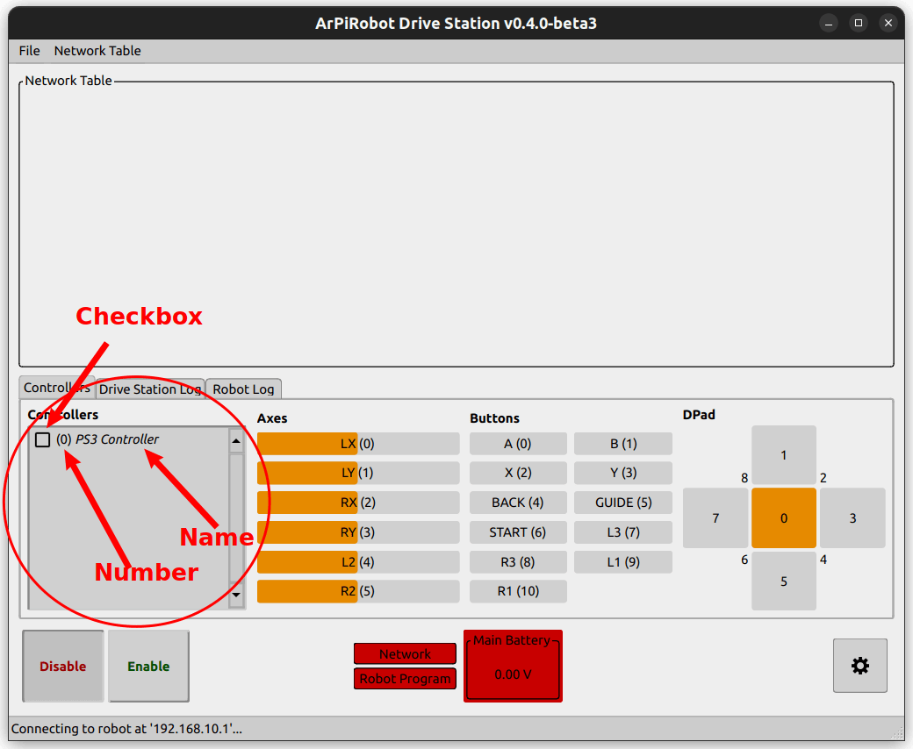
Each gamepad in the drive station is assigned a number based on its order in this list. The top gamepad is number zero. You will often only have one gamepad, but if you have multiple you can drag them to reorder them in the list and assign different numbers. For now, we will only be using one gamepad, number zero, so make sure the gamepad you plan to use is at the top of the list if you have multiple.
Additionally, each gamepad has a checkbox by its name. By default, all gamepads are unchecked. When this is the case, the Drive Station will not send data from these gamepads to the robot. You must check the box beside any gamepad you plan to use. You will have to check this box by your gamepad each time you start the Drive Station.
If you click on the name of the gamepad in the list you will be able to see a response to pressing buttons or moving the sticks to the right of the gamepad list in the Drive Station. Each axis and button also has a number assigned to it. These numbers are shown in the drive station. If you are unsure what number a certain button is, press the button and look for which indicator lights up. The number will be listed on the lit indicator. Likewise, you can move an axis and see which indicator changes to determine axis numbers.
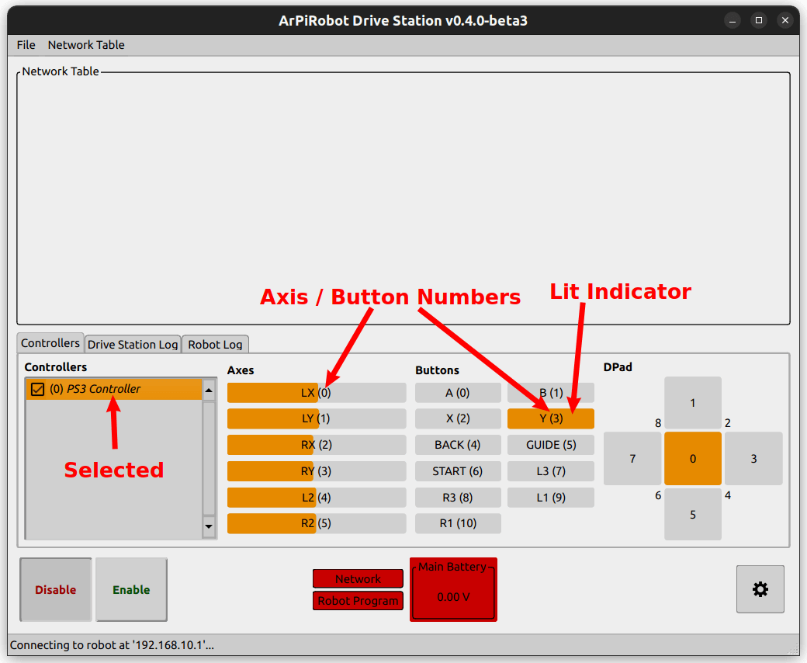
Adding a Gamepad to Code
To get gamepad data in your code you need to add a Gamepad object. First add the import / include with the others at the top of robot.py or robot.hpp.
from arpirobot.devices.gamepad import Gamepad
#include <arpirobot/devices/gamepad/Gamepad.hpp>
The add a new device to your Robot class
# Add below drive_helper in __init__
# Using gamepad number 0
# Change number in constructor to use other gamepad number
# You can create multiple gamepad objects to use multiple gamepads
self.gp0 = Gamepad(0)
// Add below driveHelper in class declaration
// Using gamepad number 0
// Change number in constructor to use other gamepad number
// You can create multiple gamepad objects to use multiple gamepads
Gamepad gp0 {0};
This Gamepad object has several functions to get data from the gamepad (note that the drive station must have the corresponding number gamepad checked).
get_axis(axis_num, deadband): Get the value of the given axis (between -1 and 1). A deadband is optional. A deadband is a "minimum magnitude" of axis values. Any axis value who's absolute value is smaller than the deadband is treated as zero. For example, if the deadband is 0.1 and the axis reads 0.05 or -0.05 the get_axis function will return 0 not 0.05 or -0.05. Only once the axis reads 0.1 will the value returned by get_axis increase above zero. A deadband is useful as a stick is rarely (if ever) going to read exactly zero when not pressed.get_button(button_num): Determine if the given button is pressed (True = pressed, False = not pressed).get_dpad(dpad_num): Get the value of the current dpad. Note that currently only one dpad is supported so calling this with any dpad_num other than 0 will always return 0. The direction is given as a number between 0 and 8 (see Drive Station for what these numbers mean).
getAxis(axisNum, deadband): Get the value of the given axis (between -1 and 1). A deadband is optional. A deadband is a "minimum magnitude" of axis values. Any axis value who's absolute value is smaller than the deadband is treated as zero. For example, if the deadband is 0.1 and the axis reads 0.05 or -0.05 the getAxis function will return 0 not 0.05 or -0.05. Only once the axis reads 0.1 will the value returned by getAxis increase above zero. A deadband is useful as a stick is rarely (if ever) going to read exactly zero when not pressed.getButton(buttonNum): Determine if the given button is pressed (true = pressed, false = not pressed).getDpad(dpadNum): Get the value of the current dpad. Note that currently only one dpad is supported so calling this with any dapdNum other than 0 will always return 0. The direction is given as a number between 0 and 8 (see Drive Station for what these numbers mean).
The above functions can be used to get gamepad data and use it to move the robot.
Driving the Robot
Up until now, the enabled_periodic / enabledPeriodic function has not been used. However, to drive the robot with a gamepad it must repeatedly check the current gamepad data and adjust motor speeds based on it. Since motors can only be moved while the robot is enabled, enabled_periodic / enabledPeriodic is the place for this code to go. To drive the robot the following set of tasks will be performed in enabled_periodic / enabledPeriodic
- Get the value for the speed axis
- Get the value for the rotation axis
- Update the speed of all motors using the drive helper
Before this code can be added, however, it is necessary to choose a speed axis and a rotation axis. The speed axis will be the left y (vertical) axis or axis number 1. The rotation axis will be the right x (horizontal) axis or axis number 2. To make the code more readable and easier to change later if desired, instead of using the numbers directly constants are created for the axis numbers in robot.py or robot.hpp. Additionally, a deadband of 0.1 will be used as this should be sufficient for most controllers. If a deadband were not used the motors would still try to move slightly even when the joysticks were not pressed.
# Add in __init__ after device variables
# Note that python does not support actual constants
# We will treat any variable in all caps as a constant
self.SPEED_AXIS = 1
self.ROTATE_AXIS = 2
self.DEADBAND = 0.1
// Add in the Robot class declaration after device variables
const int SPEED_AXIS = 1;
const int ROTATE_AXIS = 2;
const double DEADBAND = 0.1;
Then the enabled_periodic / enabledPeriodic function can be implemented as follows. Also, remove anything in robot_enabled / robotEnabled that may be left from testing drive helpers (robot_enabled / robotEnabled should be an empty function now; in python use "pass").
def enabled_periodic(self):
# Get value for the speed axis
speed = self.gp0.get_axis(self.SPEED_AXIS, self.DEADBAND)
# Get value for the rotation axis
rotation = self.gp0.get_axis(self.ROTATE_AXIS, self.DEADBAND)
# Update speed of all motors using drive helper
self.drive_helper.update(speed, rotation)
void enabledPeriodic(){
// Get value for speed axis
double speed = gp0.getAxis(SPEED_AXIS, DEADBAND);
// Get value for the rotation axis
double rotation = gp0.getAxis(ROTATE_AXIS, DEADBAND);
// Update speed of all motors using drive helper
driveHelper.update(speed, rotation);
}
Build and deploy this program to the robot. Open the Drive Station, connect your gamepad and enable it in the drive station (check the box by the gamepad). Also make sure it is gamepad number 0. Then, enable the robot. You should now be able to drive the robot using the gamepad, however directions are probably incorrect.
Most likely, your robot drives forward when you press the left stick down. Recall that the motors were configured such that positive was forward. However, most gamepads "up" on the stick is negative = reverse. To fix this, multiply the speed by negative 1.
speed = -1 * self.gp0.get_axis(self.SPEED_AXIS, self.DEADBAND)
double speed = -1 * gp0.getAxis(SPEED_AXIS, DEADBAND);
If your rotation is also the incorrect direction this can also be fixed the same way (multiply the rotation variable by negative 1). If you are unable to fix directions with multiplications by negative 1, you have motors numbered incorrectly (motor numbers for left and right motors are mixed up).
Axis Transforms (Advanced Topic)
Note: This section describes in detail what an axis transform is, how they work mathematically, and why certain transforms are selected for rotation and speed. If you don't care about that, skip to the bottom of this section. Code is shown for how to use the transforms. You can implement this code and just experiment with them to see if you like the results.
What is an Axis Transform
An Axis Transform is an object that alters how an axis's value changes as the joystick is moved. It can be considered a mathematical function that takes joystick position (-1 to 1) as an input and returns an altered output to change the "shape" of the joystick graph. Unaltered, the value returned by get_axis / getAxis (referred to as the output value) is the same as the value obtained from the drive station (referred to as the input value) provided no deadband is used. This can be considered a simple linear function.
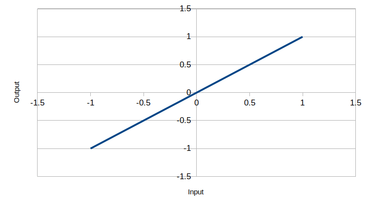
An axis transform alters this linear relation to have a different shape. Two axis transforms are currently implemented: a cubic transform and a square root transform.
Square Root Axis Transform
The square root transform is very simple. The output is the square root of the input (note that for negative inputs, the output is the negative of the square root of the absolute value of the input). The original intention behind this transform is for use with rotating the robot. In practice, it is often the case that when rotating the robot "slow" speeds of rotation are used little if at all. Often rotating the robot even a slow speed requires a significant amount of rotation power. As such, it is desirable that when the joystick is moved a little distance from center (zero) the rotation power (output of get_axis / getAxis) should increase rapidly. However, once the rotation power reaches a certain point small changes in power can quickly alter rotation speed. As such, as the joystick is further from center it is desired to slow the rate of change of output power to increase controllability. This describes a square root graph. Effectively, this means that the joystick must only be pressed a small distance to begin rotating and once rotation starts a large range of the joystick is dedicated to fine tuning of rotation speed making it easy to achieve a constant rotation speed.
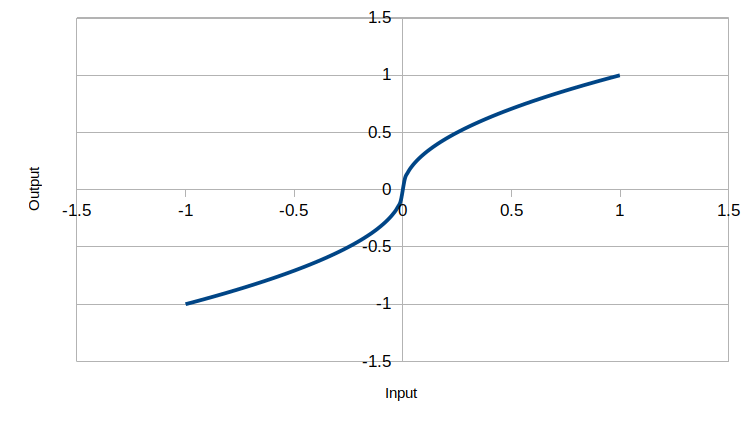
Consider the example where 30% power is necessary to begin rotating the robot. It is desirable to quickly reach this level once the joystick begins to move. With a linear relation (no transform) this is acheived once the stick is pressed 30% of its range of motion, leaving 70% of the range of motion to "fine tune" rotation speed. In contrast, with the square root relation 30% output is reached when the stick has moved to only 9% of its range of motion. This leaves 91% of the range of motion to fine tune rotation. As such, the joystick can be held "less accurately" in the same spot while still maintaining the "same" rotation rate. While an increase of 21% may seem fairly small, the joysticks on gamepads often have a small range of motion.
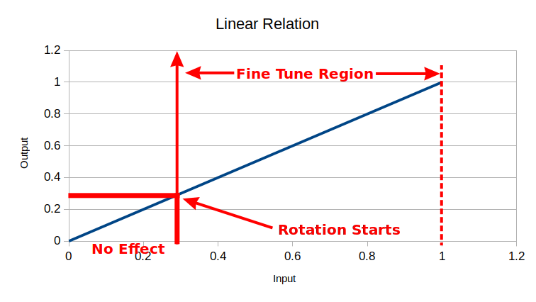
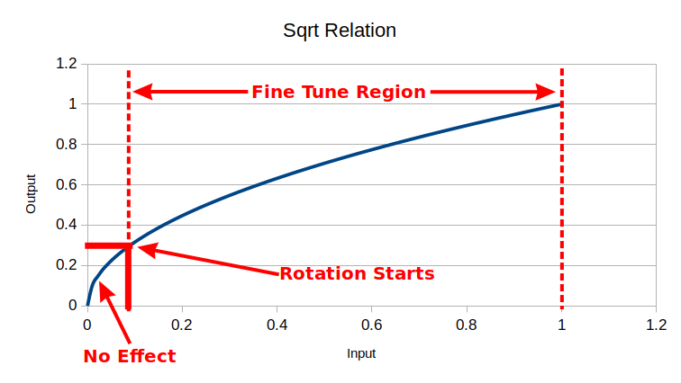
As is seen in the above graphs, when used for the rotation axis, a square root transform reduces the distance over which there is no effect and increases the "fine tune" region making it easier to both start rotation and to maintain a "fixed" rotation speed.
Cubic Axis Transform
In addition to the square root transform, a cubic transform is implemented. The cubic transform is designed for use with a drive speed axis and is more complex than the square root transform. The idea behind the square root transform is that most often when driving the robot two speeds are used: full speed and a "medium" speed that is sufficient to keep the robot moving, but allow maneuvering the robot to be simpler. Rarely are speeds between these used (other than of course stopped). Attaining full speed is easy, simply press the joystick to the limit. However, attaining and maintaining a "medium" controllable speed is more difficult as there is a very limited range of stick motion that is allowable. The goal of the cubic transform is to extend the area of the stick that results in the "medium" speed. This speed will be referred to as the "mid power" or "midPower". Additionally, it is sometimes the case that a minimum speed exist when driving the robot (generally desirable if the robot does not start moving until a fairly high amount of power is applied). This will be referred to as the "min power" or "minPower".
Since the goal of the cubic transform is to dedicate a large area of the joystick to the mid power, it follows that going from zero output to mid power must happen fairly rapidly. The curve then flattens out around mid power before rising fairly rapidly to full power. This is achieved by fitting a cubic curve to the following set of points
| input | output |
|---|---|
| 0 | minPower |
| 0.45 | midPower |
| 0.5 | midPower |
| 0.55 | midPower |
| 1 | 1 |
Note that when the input is zero the output is minPower. As such using a cubic axis transform with a non-zero minPower requires use of a deadband (otherwise the robot will always move). Additionally, the cubic transform is constructed only for positive inputs. When inputs are negative the transform operates on their absolute value. The output of the transform matches the sign of the input (in other words, the cubic function is rotated about the origin into the third quadrant to yield the correct response for negative inputs). This results in a curve looking something like the following (in the below example minPower = 0.2 and minPower = 0.6)
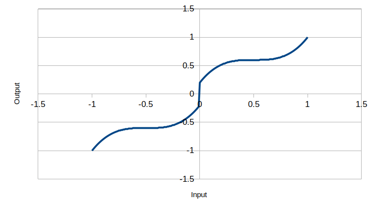
Analyzing this curve it is seen that approximately a third of the joystick's range of motion will achieve the "controllable" speed discussed before.
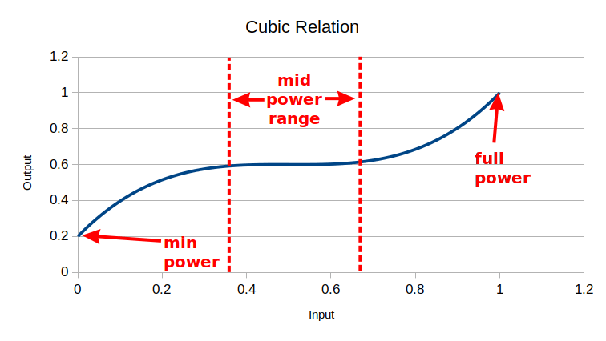
Deadbands with Axis Transforms
As mentioned previously, using the cubic transform with a non-zero minPower requires use of a deadband. Additionally, it is rarely desirable to use any transform without a deadband (for the same reasons as it is not desirable to use a linear relation without a deadband). However, this brings up the question of how the deadband is applied and how that affects the transforms. In the Gamepad's get_axis / getAxis function, the deadband is applied before the transform. If the value is within the deadband (too small) the function returns zero and never applies the transform. Once the deadband is crossed the input value is actually altered. A deadband alters the input value from a controller to make it smooth. If it was unaltered there would be a jump as the deadband is crossed (see picture below). The deadband alters the input by adjusting it to fit a line from (deadband, 0) to (1, 1) as shown in the second picture (or those equivalent points in the third quadrant). In the pictures below the deadband is 0.1
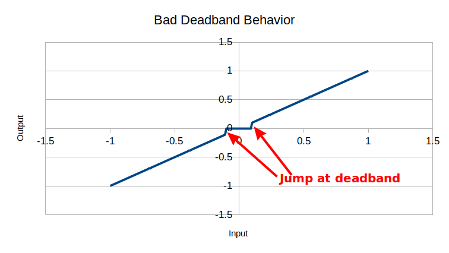
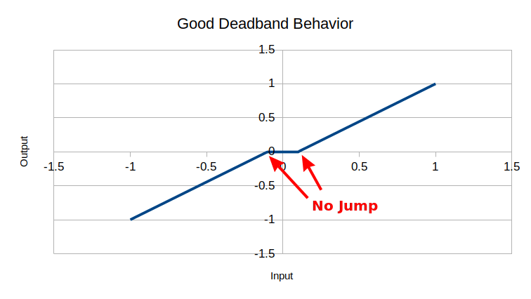
The second graph is how the deadband works in the ArPiRobot CoreLib. The values on this adjusted line are then passed to the transforms. In effect, this compresses any transform slightly horizontally just as the deadband does for a line. Some examples of this are shown below for both the square root and cubic transforms seen earlier. Note that the "jump" in the cubic with deadbad graph is due to the minPower of the cubic. If a minPower of zero were used there would be no jump.
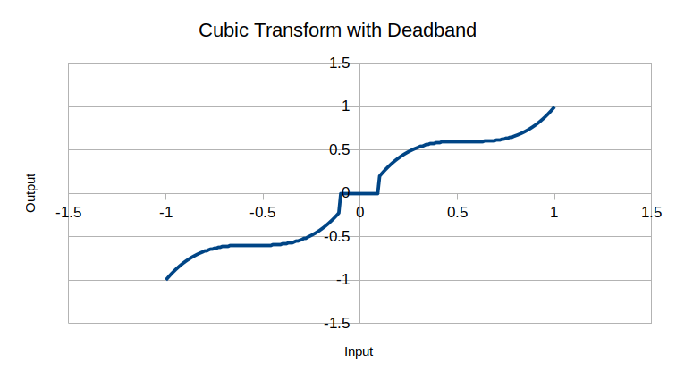
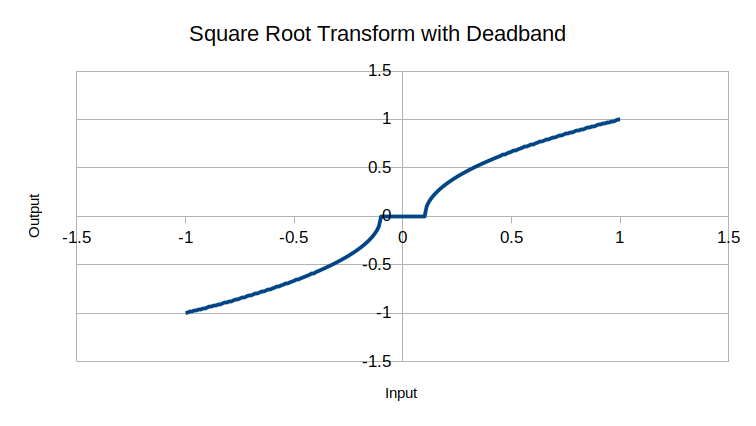
Using Axis Transforms in Code
Implementing either of the two axis transforms described above is simple as they are builtin to the core library. The following shows how to add a Cubic transform (minPower = 0, midPower = 0.5) to the speed axis and a square root transform to the rotate axis.
# Add with imports at top
from arpirobot.core.drive import CubicAxisTransform, SquareRootAxisTransform
# Add in robot_started
self.gp0.set_axis_transform(self.SPEED_AXIS, CubicAxisTransform(0, 0.5))
self.gp0.set_axis_transform(self.ROTATE_AXIS, SquareRootAxisTransform())
// Add with includes at top
#include <arpirobot/core/drive/CubicAxisTransform.hpp>
#include <arpirobot/core/drive/SquareRootAxisTransform.hpp>
// Add in robotStarted
gp0.setAxisTransform(SPEED_AXIS, std::make_shared<CubicAxisTransform>(0, 0.5));
gp0.setAxisTransform(ROTATE_AXIS, std::make_shared<SquareRootAxisTransform>());